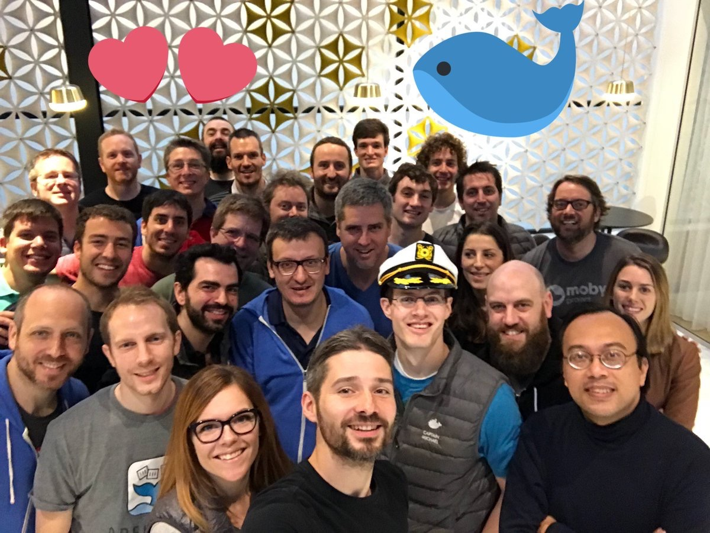
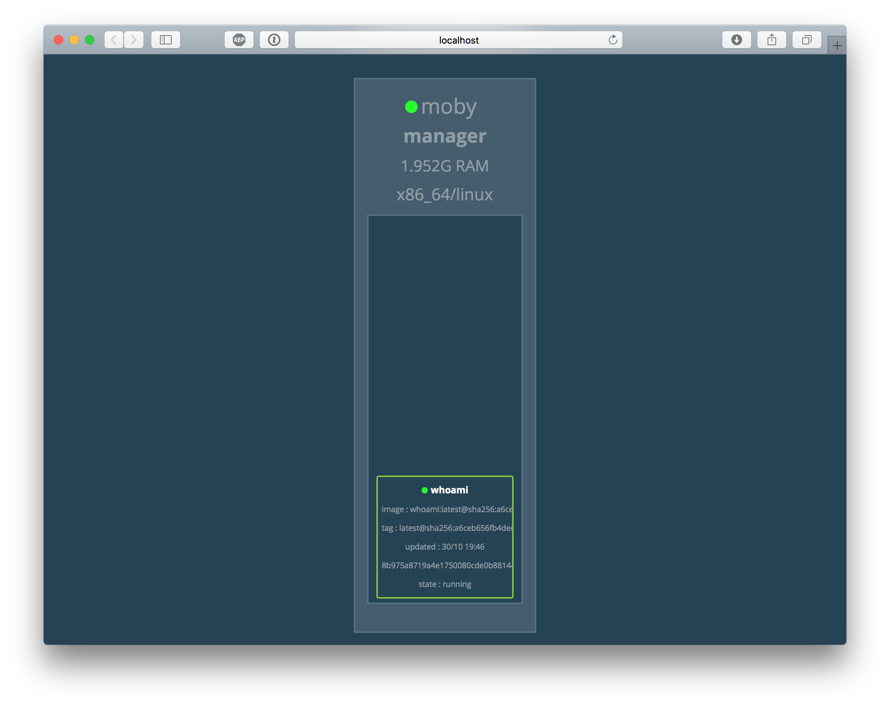
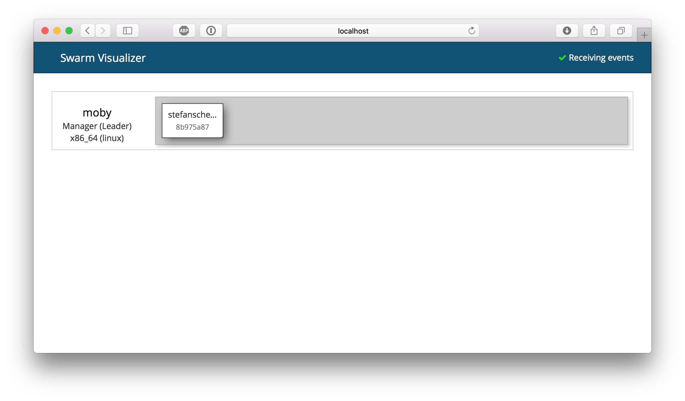
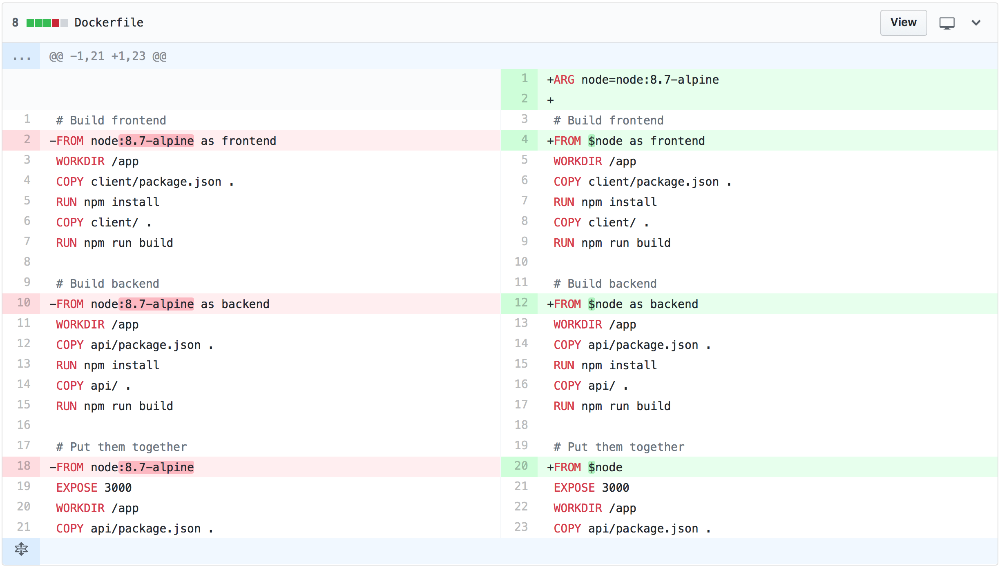
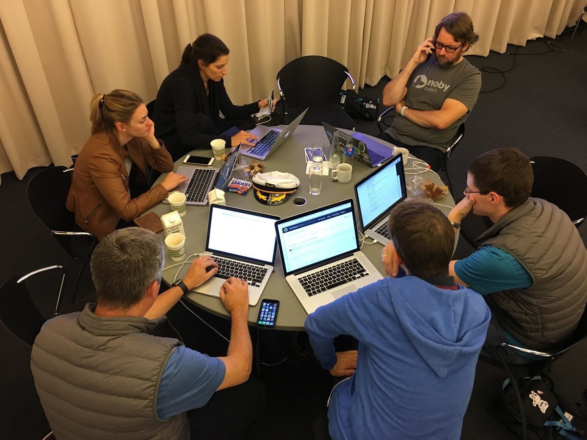
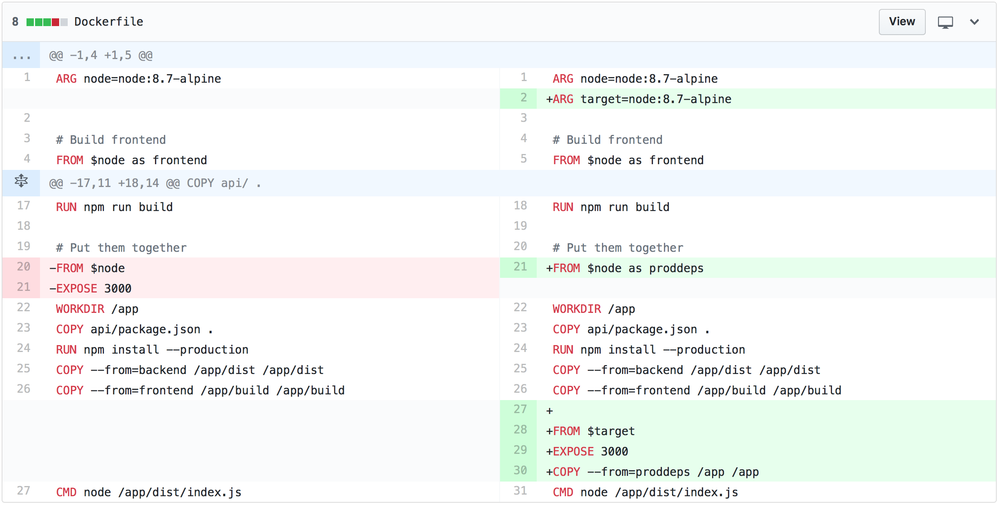
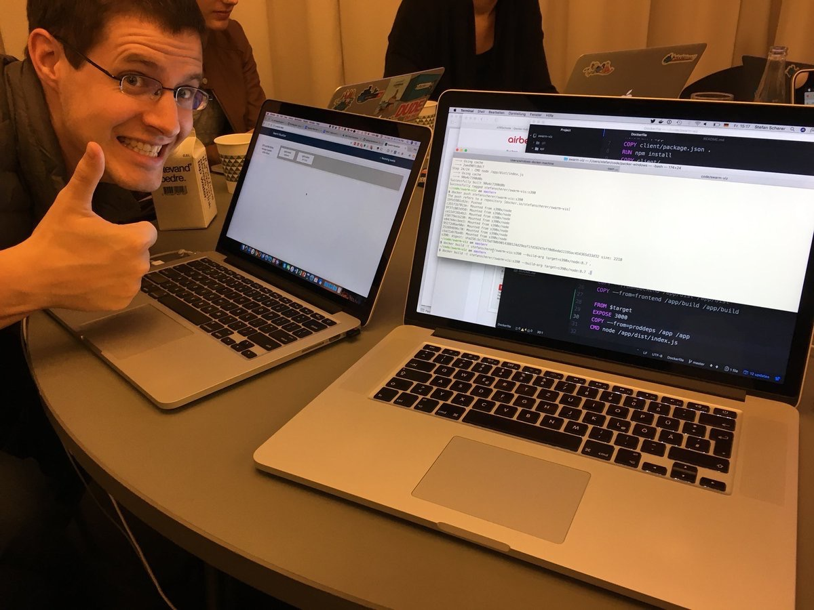
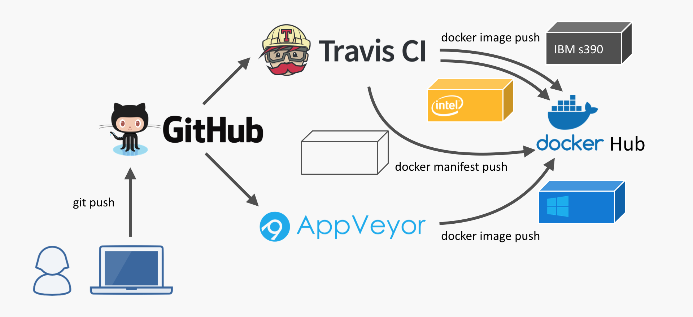

After the DockerCon EU and the Moby Summit in Copenhagen last week we also had an additional Docker Captain's Hack Day. After introducing our current projects to the other Captains we also had time to work together on some ideas.
"Put all Captains available into a room, feed them well and see what's happening."

Modernizing Swarm Visualizer
One of the ideas was Swarm Visualizer 2.0. Michael Irwin came up with the idea to rewrite the current Visualizer to be event driven, use a modern React framework and cleanup the code base.
The old one uses a dark theme and shows lots of details for the services with small fonts.

Here's a screenshot of an early version of the new UI. With a click on one of the tasks you get more details about that task and its service. All information is updated immediately when you update the service (eg. add or remove labels).

You can try this new Swarm visualizer yourself with the following command:
docker container run \
--name swarm-viz \
-p 3000:3000 \
-v /var/run/docker.sock:/var/run/docker.sock \
mikesir87/swarm-viz
I joined Michael's table as I was curious if we can have this visualizer for Windows, too. Especially the new Windows Server 1709 that makes mapping the Docker API into a Windows container as easy as on Linux.
In this blog post I focus on how to build a Node.js app with Docker and don't look into the details of the app itself. I'll show how to improve the Dockerfile to build for multiple platforms and finally how to build a CI pipeline for that. You can find the project on github.com/mikesir87/swarm-viz.
Initial Dockerfile
The application is built inside a Docker container. So you even can build it without any developer tools installed, you only need Docker.
Let's have a look at the first version of the Dockerfile for the Linux image. It is a multi-stage build with three stages:
# Build frontend
FROM node:8.7-alpine as frontend
WORKDIR /app
COPY client/package.json .
RUN npm install
COPY client/ .
RUN npm run build
# Build backend
FROM node:8.7-alpine as backend
WORKDIR /app
COPY api/package.json .
RUN npm install
COPY api/ .
RUN npm run build
# Put them together
FROM node:8.7-alpine
EXPOSE 3000
WORKDIR /app
COPY api/package.json .
RUN npm install --production
COPY --from=backend /app/dist /app/dist
COPY --from=frontend /app/build /app/build
CMD node /app/dist/index.js
The first stage uses FROM node:8.7-alpine to build the frontend in a container.
The second stage builds the backend in another Alpine container. During that build you also need some development dependencies that aren't needed for the final image.
In the third stage only the dependencies that are relevant at runtime are installed with npm install --production. All artifacts needed from the other stages are also copied into the final image.
Make FROM more flexible for Windows
I tried to build the app for Windows Server 1709 and had to create a second Dockerfile as I have to use another FROM as node does not have a Windows variant in the official images. And Windows Server 1709 just came out so I had to create a Node.js base image for Windows myself.
So what I did was copying the Dockerfile to Dockerfile.1709 and changed all the
FROM node:8.7-alpine
lines into
FROM stefanscherer/node-windows:1709
But now we have duplicated the Dockerfile "code" for only this little difference.
Fortunately you now can use build arguments for the FROM instruction. So with only a little change we can have ONE Dockerfile for Linux and Windows.
ARG node=node:8.7-alpine
FROM $node as frontend

On Linux you still can build the image as before without any change.
On Windows I now was able to use this Dockerfile with
docker image build -t viz `
--build-args node=stefanscherer/node-windows:1709 .
and use a Windows Node.js base image for all stages. First pull request done. Check! 😊
And running the manually built image in Windows Server 1709 looks very similar to Linux:
docker container run `
-p 3000:3000 `
-u ContainerAdministrator `
-v //./pipe/docker_engine://./pipe/docker_engine `
viz
Going multi-arch
We showed the Windows Swarm visualizer to other Captains and we discussed how to go to more platforms. Phil Estes, a very active member of the Docker community who's helping push the multi-architecture support in Docker forward and the maintainer of the manifest-tool, commented:
With Golang it is easy to build multi-arch images, just cross-build a static binary with GOARCH=bar go build app.go and copy the binary in an empty FROM scratch image.
Hm, we use Node.js here, so what has to be done instead?

Well, instead of the scratch image we need the node image for the Node.js runtime. So we had to choose the desired architecture and then copy all sources and dependencies into that image.
Our Node.js application uses Express, Dockerode and some other dependencies, that are platform independent. So this simple copy approach should do it, we thought.
We added another build stage in the Dockerfile where we switch to the desired platform. You may know, the node image on Docker Hub is already a multi-arch image. But in this case we want to build - let's say on Linux/amd64 - for another platform like the IBM s390 mainframe.
With another build argument to specify the target platform for the final stage we came up with this:
ARG node=node:8.7-alpine
ARG target=node:8.7-alpine
FROM $node as frontend
...
FROM $target
EXPOSE 3000
COPY --from=proddeps /app /app
CMD node /app/dist/index.js

As Phil works for IBM he could easily verify our approach. We built an IBM version of the Swarm visualizer with
docker image build -t mikesir87/swarm-viz \
--build-arg target=s390x/node:8.7 .
and pushed it to the Docker Hub. Phil then pulled and started the container in IBM Cloud and showed us the visualizer UI. Hurray!

The second pull request was accepted. Check! 🎉
Now we needed some more automation to build and push the Docker images.
Adding a multi-arch CI pipeline
I've done that several times for my Raspberry Pi projects, so cherry-picked the relevant parts from other repos. For the CI pipeline we choose Travis CI, but any other CI cloud service could be used that allows multi-stage builds.
The .travis.yml uses a matrix build for all architectures. Currently we're building it for only two platforms:
sudo: required
services:
- docker
env:
matrix:
- ARCH=amd64
- ARCH=s390x
script:
- ./travis-build.sh
build
The travis-build.sh then is called for each architecture of that matrix and we run the corresponding build.
docker image build -t mikesir87/swarm-viz \
--build-arg target=$ARCH/node:8.7 .
deploy
As a final step in the .travis.yml we push every image to Docker Hub and tag it with the Git commit id. At this early stage of the project this is good enough. Later on you can think of tagged release builds etc.
The travis-deploy.sh pushes the Docker image for each architecture to the Docker Hub with a different tag using the $ARCH variable we get from the matrix build.
docker image push "$image:linux-$ARCH-$TRAVIS_COMMIT"
In the amd64 build we additionally download and use the manifest-tool to push a manifest list with the final tag.
manifest-tool push from-args \
--platforms linux/amd64,linux/s390x \
--template "$image:OS-ARCH-$TRAVIS_COMMIT" \
--target "$image:latest"
You can verify that the latest tag is already a manifest list with another Docker image provided by Phil
$ docker container run --rm mplatform/mquery mikesir87/swarm-viz
Image: mikesir87/swarm-viz:latest
* Manifest List: Yes
* Supported platforms:
- amd64/linux
- s390x/linux
Future improvements
In the near future we will also add a Windows build using AppVeyor CI to provide Windows images and also put them into the manifest list. This step would also be needed for Golang projects as you cannot use the empty scratch image on Windows.

If you watch closely we have used node:8.7 for the final stage. There is no multi-arch alpine image, so there also is no node:8.7-alpine as multi-arch image. But the maintainers of the official Docker images are working hard to add this missing piece to have small images for all architectures.
$ docker container run --rm mplatform/mquery node:8.7-alpine
Image: node:8.7-alpine
* Manifest List: Yes
* Supported platforms:
- amd64/linux
Conclusion
At the end of the Hack day we were really excited how far we came in only a few hours and learned that cross-building Node.js apps with Docker and deploying them as multi-arch Docker images isn't that hard.
Best of all, the users of your Docker images don't have to think about these details. They just can run your image on any platform. Just use the command I showed at the beginning as this already uses the multi-arch variant of the next Swarm visualizer app.
So give multi-arch a try in your next Node.js project to run your app on any platform!
If you want to learn more about multi-arch (and you want to see Phil with a bow tie) then I can recommend the Docker Multi-arch All the Things talk from DockerCon EU with Phil Estes and Michael Friis.
In my lastest multi-arch slidedeck there are also more details about the upcoming docker manifest command that will replace the manifest-tool in the future.
Thanks Michael for coming up with that idea, thanks Phil for the manifest-tool and testing the visualizer. Thanks Dieter and Bret for the photos. You can follow us on Twitter to see what these Captains are doing next.
Stefan
@stefscherer